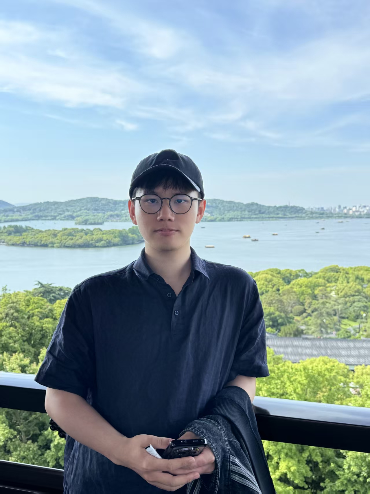
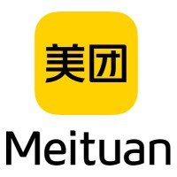
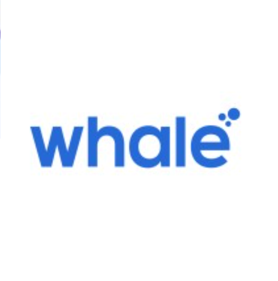

Westlake University
Apr 2026 – Present
Research Assistant
Hangzhou, China
AI4Sci, information retrieval, and recommendation

IR · NLP · RAG · Multimodal Search
I am a Research Assistant at WestlakeNLP Lab, where I am fortunate to be advised by Prof. Yue Zhang. Previously, I had the pleasure of collaborating with Yilun Zhao at Yale on retrieval research. My work centers on scientific search, reasoning-intensive retrieval, and multimodal retrieval-augmented systems.
Before moving into research, I gained extensive industrial experience in large-scale AI system development, including as an AI Engineer at Alibaba Qwen ToB, where I worked on large-scale image search and RAG-based AI search systems. Previously I received my B.Eng. in Information Engineering from Zhejiang University.
Apr 2026 – Present
Research Assistant
Hangzhou, China
AI4Sci, information retrieval, and recommendation
Sep 2025 – Mar 2026
Research Collaborator
Remote
Reasoning-intensive retrieval and synthetic data for retriever training

Jul 2024 – Jul 2025
AI Engineer
Hangzhou, China
Multimodal search, RAG systems, and search evaluation
Nov 2023 – May 2024
Research Intern
Hangzhou, China
Federated learning and edge-device LLM fine-tuning
Apr 2023 – Jul 2023
AI Engineer Intern
Shanghai, China
LLM service platforms and retrieval-augmented email assistants

Jul 2023 – Sep 2023
Software Engineer Intern (Backend)
Chengdu, China
Intelligent CRM systems

Sep 2022 – Dec 2022
Software Engineer Intern (Backend AI)
Hangzhou, China
AI streaming video platforms
Zhejiang University
B.Eng. in Information Engineering, 2020–2024
Information Retrieval, RAG, Dense Retrieval, BM25, CLIP, HNSW, Qwen Embeddings, LangChain, PyTorch, MS-Swift, Flask, Spring Boot, gRPC, PostgreSQL